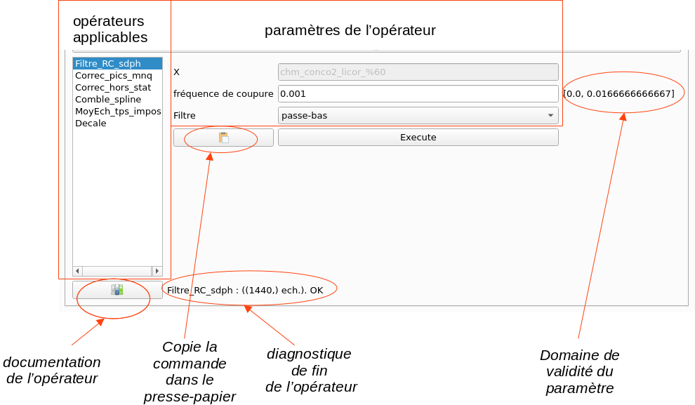
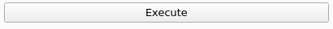

Fonctionnalité Détail
L'onglet Traitements
Opérations

Pour excécuter une opération sur le vecteur
- sélectionner un opérateur dans la liste des opérateurs (à gauche)
- renseigner les paramètres non grisés (à droite)
- clicquer sur le bouton

Durant l'exécution de l'opérateur
L'indicateur «traitement en cours» peut rester
rouge très longtemps.
A la fin de l'exécution de l'opérateur
- les données résultats sont tracées dans le graphe (courbe orange).
- le diagnostique de sortie est indiqué dans la zone prévue à cet effet.